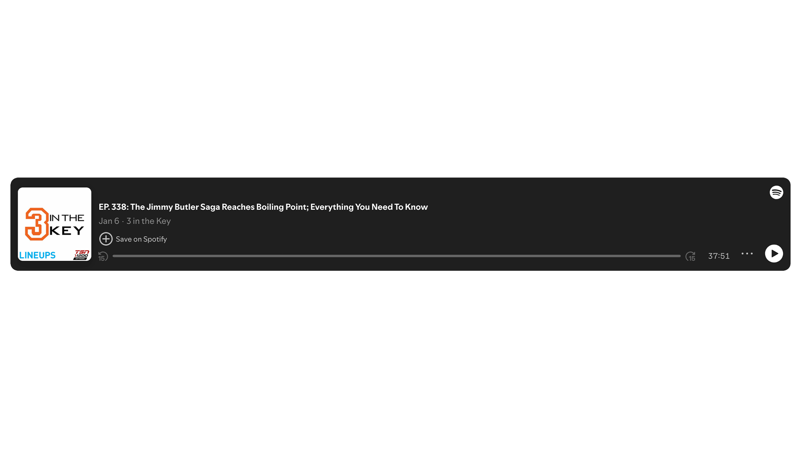
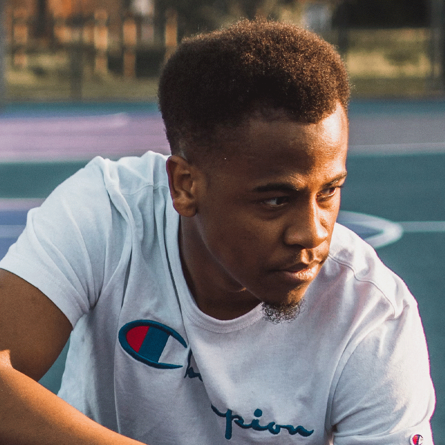
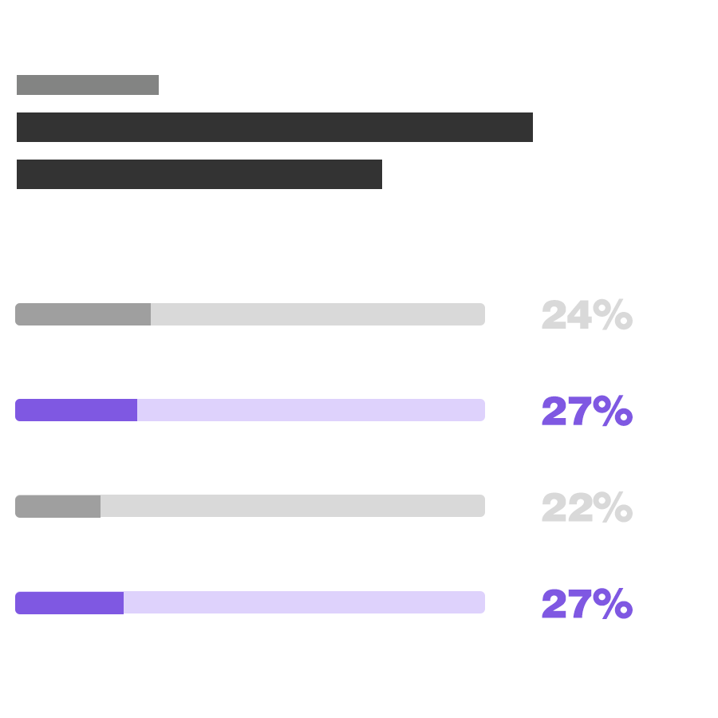
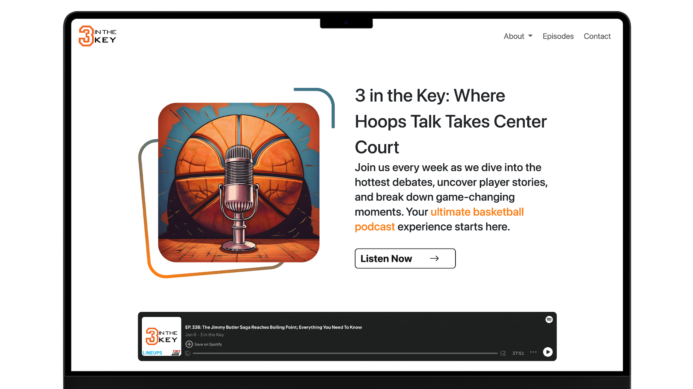

The Objective
The goal was to create a visually engaging, user-friendly platform that enhances both listener engagement and sponsor visibility — establishing a strong brand identity that reflects the podcast's dynamic, passionate basketball coverage.
Through research-driven design, the project aimed to increase interaction, improve content discoverability, and build a community-driven environment, while balancing sponsor exposure with a non-intrusive user experience.
How I got here
The Process
Understand
Empathise & Define
Research, interviews, and framing the real problem.
Explore
Ideate & Prototype
Turning insight into concrete design directions.
Materialise
Test & Implement
Refining the design against real user feedback.





Outcomes
The Results
37%
Session Duration Increase
Users are spending 37% more time on the site, engaging with articles, podcasts, and features. This highlights a stronger connection with the content and a more immersive experience.
63%
Visual Hierarchy Effectiveness
The UI layout is now 63% more effective in guiding users to important content. Clearer typography, spacing, and call-to-action buttons enhance readability and navigation.
45%
User Engagement Growth
Interactions such as clicks, shares, and comments have increased by 45%. This demonstrates a more interactive and community-driven experience for basketball fans.
A key challenge is ensuring that sponsors and collaborators can easily access relevant content without leaving the website.


"The website has made it so much easier to connect with both our audience and potential collaborators."
Fuad
Co-Host, 3 In The Key
Click the link to view the 3 In The Key website.
Deep Dive
The Brief
Business Goals
The goal was to establish a distinctive, engaging brand identity that resonates with basketball fans globally — building a dynamic, inclusive community of listeners, sponsors, and collaborators, not just a successful podcast. Listeners needed to feel connected to the content, enjoy a seamless experience, and feel part of the community.
The Process
The research process was initiated with a mix of qualitative and quantitative methods. I started by conducting surveys and user interviews with listeners to gather insights into their preferences, podcast consumption habits and design expectations. Additionally, I did a competitive analysis to understand what was working well in the market and where we could differentiate 3 in the Key.
Who Did You Speak To?
I spoke to a wide range of people, including: Podcast listeners (from casual fans to hardcore enthusiasts), Business owners (the podcast creators) to understand their brand vision, Marketing and branding experts for advice on how to make the brand visually appealing.
Did You Play This Research Back to the Business?
Yes, I presented the research findings back to the business team in a detailed report, highlighting key insights on the audience’s behaviour and preferences. The team found the findings to be valuable, especially the user-centric insights on the importance of community engagement. They were particularly excited about the idea of creating interactive features and content that would resonate with both fans and potential sponsors.
Big Revelations from the Research?
A major revelation from the research was the realization that many listeners craved more interaction with the podcast, whether through live discussions, direct Q&A with hosts, or a deeper connection to the basketball community. This drove us to implement interactive features like listener polls and comments during episodes to deepen engagement.
How Did the Research Steer the Direction of the Project?
The research shaped the overall direction of the project. It was clear that listeners not only wanted high-quality content, but also a platform where they could feel connected to the hosts and fellow basketball fans. This led to the decision to be interactive through Instagram.
Time, Struggles & Lessons
With more time, I'd have iterated further on visual styles and layouts, and experimented more with live polls or fan-driven content to deepen the community feel.
The biggest struggle was balancing sponsor visibility with a non-intrusive experience — the lesson being that flexibility and compromise are essential when a project has multiple stakeholders.
Final Thoughts
Through the combination of user research, collaborative design efforts, and iterative testing, the 3 in the Key website emerged as a dynamic and engaging platform. It successfully catered to both the community of basketball enthusiasts and the business needs of sponsors and collaborators. The project reinforced how research-driven decisions can significantly enhance the user experience and create a lasting brand presence for the podcast.